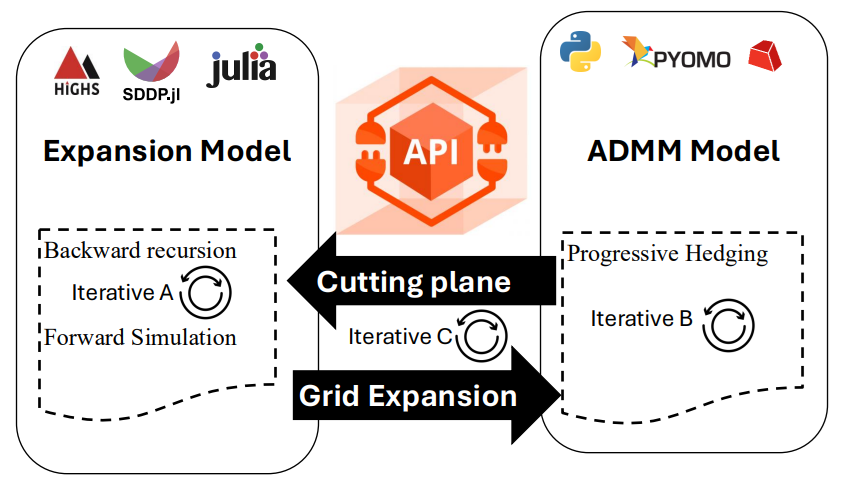

Expansion theory: SDDP + ADMM coupling¶
Expansion planning in Dig-A-Plan is built on two layers:
SDDP (Julia) for multi-stage expansion planning, and
ADMM (Python) for operational feasibility checks (power-flow constraints under scenarios),
using cut feedback (Benders-style information) to refine planning decisions.
1) What expansion planning solves¶
Expansion planning decides what to upgrade (lines/transformers) and when so the grid remains feasible as load and PV evolve.
Because the future is uncertain, the plan must work across multiple scenarios while respecting operational limits (voltage/current/device constraints).
To achieve this, Dig-A-Plan uses a planning–operations loop coordinated by the API, which exchanges information between the planning and operational models:
Planning (SDDP / Julia) proposes candidate investment decisions for each stage (e.g., which line/transformer capacities to reinforce and when).
Operations (ADMM / Python) checks whether the grid can operate under many scenarios given those investments (power-flow feasibility, voltage/current limits, and device actions such as taps/switching if enabled).
Cuts / feedback are extracted from the operational solves and sent back (via the API) to SDDP, so the next planning iteration improves (the planner learns which investments avoid infeasibility or high operational penalties).
Planning ↔ Operations feedback loop¶

The API sits between SDDP and ADMM: SDDP sends candidate expansion decisions to ADMM for feasibility checks, and ADMM returns cutting-plane feedback (cuts) that refines the next SDDP iteration.
2) What SDDP is doing (planning layer)¶
SDDP solves the long-term expansion planning problem as a multi-stage stochastic optimization:
Stages: planning periods (e.g., 5 stages representing 5-year blocks)
Uncertainty: how load and PV evolve over time (represented by sampled scenarios)
Decisions: how much to reinforce/expand line and transformer capacities, balancing investment cost against future operational risk
SDDP runs in two complementary phases:
Forward simulation: it samples scenarios and simulates the current planning policy stage-by-stage to generate candidate states/decisions.
Backward recursion: it solves stage subproblems and updates a piecewise-linear approximation of the future cost-to-go using cuts.
These cuts capture how future cost/feasibility changes with the planning state. In Dig-A-Plan, the approximation is strengthened over iterations using feedback from the operational layer (ADMM), so SDDP learns expansion decisions that remain feasible across scenarios.
3) What ADMM does (operations layer)¶
The expansion decisions proposed by SDDP are only useful if the grid can actually operate once those reinforcements are built.
For each candidate plan (and for many scenarios), Dig-A-Plan solves an operational feasibility problem that enforces:
power-flow constraints
voltage bounds
current/thermal limits
device constraints (e.g., OLTC tap ranges)
switching / reconfiguration decisions
Running these operational checks for many scenarios can be computationally expensive, especially on large networks.
To scale this step, Dig-A-Plan uses ADMM as a scenario-decomposition method:
Each scenario (or scenario group) is solved as a subproblem.
A consensus step coordinates shared variables/constraints across subproblems.
4) How the coupling works: “cuts” from operations to planning¶
After SDDP proposes a candidate plan (capacities / investments), ADMM solves the corresponding operational problem.
From the operational solution, we extract sensitivity information (typically dual variables / multipliers) and build a cut that tells the planner:
These cuts are accumulated and passed back to SDDP, improving the cost-to-go approximation and steering investments toward operational feasibility.
5) Minimal “how to run” (for context)¶
Run expansion (IEEE-33 example)¶
python experiments/expansion_planning_script.py --kace ieee_33 --cachename run_ieee33
Useful options:
withapi false: Run locally without calling the FastAPI server (useful for debugging).
admmiter
: Override admm_config.max_iters to speed up tests (fewer ADMM iterations). riskmeasuretype <Expectation|Entropic|Wasserstein|CVaR|WorstCase>: Select the SDDP risk measure.
riskmeasureparam
: Set the risk-measure parameter used by SDDP. fixed_switches true|false: If true, ADMM treats switches as fixed (no switching optimization).
Outputs are saved under .cache/.
6) Key concepts¶
Stage: a planning time period (e.g., 5-year block).
Scenario: one realization of uncertainty (load/PV evolution, profiles).
Planning decision: reinforcement/expansion capacity decisions.
Operational decision: feasibility actions (flows, taps, switching).
Cut: linear approximation used by SDDP to represent future cost/feasibility impact.
7) Input payload (00-expansion.json)¶
All three reconfiguration scripts start from the same payload file:
experiments/ieee_33/00-expansion.json
It has three main blocks:
7.1 grid¶
"grid": {
"name": "test",
"pp_file": "examples/ieee_33/simple_grid.p",
"s_base": 1000000,
"cosφ": 0.95,
"egid_id_mapping_file": "examples/ieee_33/consumer_egid_idx_mapping.csv",
"minimum_impedance": 0.001
}
pp_file: path to the pandapower network snapshot.s_base: base power used for per-unit scaling (e.g., 1 MVA).cosφ: default power factor assumption.egid_id_mapping_file: mapping between consumer identifiers and internal indices.minimum_impedance: a floor to prevent numerical issues (e.g., zero-impedance branches).
7.2 profiles¶
"profiles": {
"load_profiles": ["examples/ieee_33/load_profiles"],
"pv_profile": "examples/ieee_33/pv_profiles",
"target_year": 2030,
"quarter": 1,
"scenario_name": "Basic"
}
Load and PV profiles define scenario time series.
target_year,quarter,scenario_namechoose a slice of the scenario dataset.These files are in parqut and each scenario has following structure `Basic_year.parquet:
┌────────┬─────┬─────┬─────┬───┬───────┬───────┬───────┬───────┐
│ egid ┆ _0 ┆ _1 ┆ _2 ┆ … ┆ _8757 ┆ _8758 ┆ _8759 ┆ _1998 │
│ --- ┆ --- ┆ --- ┆ --- ┆ ┆ --- ┆ --- ┆ --- ┆ --- │
│ str ┆ f64 ┆ f64 ┆ f64 ┆ ┆ f64 ┆ f64 ┆ f64 ┆ f64 │
╞════════╪═════╪═════╪═════╪═══╪═══════╪═══════╪═══════╪═══════╡
│ 883806 ┆ 0.0 ┆ 0.0 ┆ 0.0 ┆ … ┆ 0.0 ┆ 0.0 ┆ 0.0 ┆ 0.0 │
7.3 admm_config¶
"admm_config": {
"verbose": false,
"solver_name": "gurobi",
"solver_non_convex": 2,
"big_m": 1000,
"ε": 1,
"ρ": 2,
"γ_admm_penalty": 1,
"γ_infeasibility": 10,
"γ_trafo_loss": 100,
"time_limit": 10,
"max_iters": 20,
"μ": 10,
"τ_incr": 2,
"τ_decr": 2,
"seed": 42,
"groups": 5,
"vm_max_pu": 1.05,
"vm_min_pu": 0.95
}
This block contains solver and algorithm parameters. Not all fields are used by all methods.
Typical roles:
solver_name: optimizer backend (e.g.,gurobi).solver_non_convex: controls nonconvex handling in the solver.big_m: Big-M constant used in mixed-integer constraints (e.g., switching logic).ε,ρ: commonly used as ADMM tuning parameters / tolerances.γ_infeasibility: weight for infeasibility slack penalties (encourages feasibility).time_limit: runtime limit per solve / iteration (seconds).max_iters: maximum iterations (notably ADMM).vm_min_pu,vm_max_pu: voltage bounds.
Note: In the Benders and Combined scripts, konfig is filtered to the fields supported by their respective Pydantic configs, then some values are overridden for that method.
7.4 sddp_config¶
"sddp_config": {
"iterations": 100,
"n_simulations": 5000,
"n_optimizations": 10,
"n_stages": 5,
"n_scenarios": 100,
"initial_budget": 500000,
"discount_rate": 0.05,
"years_per_stage": 5,
"risk_measure_type": "Expectation",
"risk_measure_param": 0.1,
"expansion_line_cost_per_km_kw": 0.2,
"expansion_transformer_cost_per_kw": 0.15,
"penalty_cost_per_consumption_kw": 6,
"penalty_cost_per_production_kw": 2,
"δ_b_var": 100000
}
This block contains solver and algorithm parameters. Not all fields are used by all methods.
Typical roles:
iterations: Sets the maximum number of iterations the algorithm will perform to converge on a solution.n_simulations: Defines the number of forward-pass Monte Carlo simulations used to evaluate the current policy’s performance.n_optimizations: Specifies how many optimization sub-problems are solved during a single stage or iteration.n_stages: Represents the total number of discrete time steps or decision periods in the planning horizon.n_scenarios: Indicates the number of possible future outcomes or paths sampled at each stage to account for uncertainty.initial_budget: Sets the starting financial capital available for investment or system expansion at the beginning of the horizon.discount_rate: Determines the rate used to calculate the present value of future costs and benefits, reflecting the time value of money.years_per_stage: Defines the duration of time that a single stage represents in the overall planning model.risk_measure_type: Specifies the mathematical approach used to evaluate risk, such as “Expectation” or “CVaR.”risk_measure_param: Provides the weighting or threshold value associated with the chosen risk measure, such as the confidence level for risk-aversion.expansion_line_cost_per_km_kw: Sets the unit cost for building new transmission lines based on distance and power capacity.expansion_transformer_cost_per_kw: Represents the capital expenditure required per unit of power for adding or upgrading transformer capacity.penalty_cost_per_consumption_kw: Defines the financial penalty incurred for failing to meet load demand, often representing the cost of unserved energy.penalty_cost_per_production_kw: Establishes the cost associated with curtailed energy or overproduction that exceeds system requirements.δ_b_var: Acts as a convergence tolerance or a slack variable used to manage constraints and stabilize the optimization process.
7.5 iterations and seed¶
iterations: number of iteration of the loop (c).seed: Seed number.